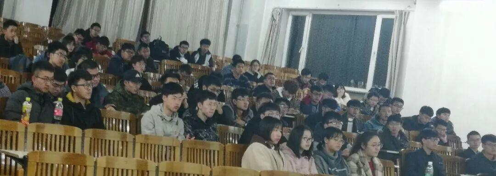
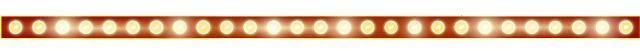
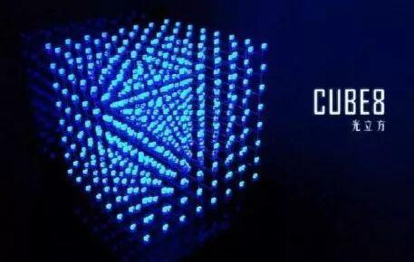
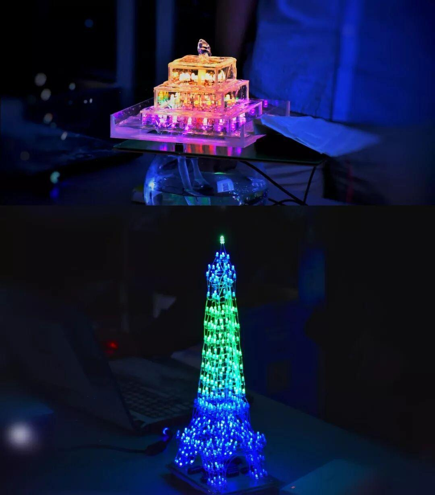
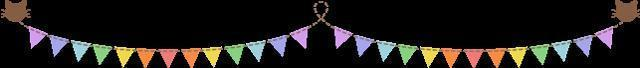

新学期第一次教学
2019我们再次相聚！

这是2019年的第一次社团教学，回首上一学期，18级成员初次认识了ardunio,单片机 ，现在我们正向更加复杂的知识进发，迈出第一步！
合理安排硬件布局
提前思考走线方案
经过半学期的初步学习后，我们应当更加成熟的设计方案。不再是将各个部件连接到一起，还要充分考虑结构设计，线路安排也要简洁明了不再是一团乱麻。
制作材料更加多元化
不再是仅用方便筷子和热熔胶搭建结构，不仅仅使用热熔胶简单地将两个部件固定在一起。3D打印、型材也逐渐步入了我们的视野。
高科技？
光电开关、超声波测距传感器、声控灯、指纹锁，这些曾经遥不可测的部件都将在接下来的日子里陆续登场。

礼物设计大赛
又要到礼物设计大赛了，用心的礼物由小小的LED组成，通过单片机编程让LED散发炫彩夺目的光芒，在良夜里发出迷人的光彩。
接下来让我们一起欣赏去年的参赛作品。

宇宙魔方？光立方
黑暗中，光立方展现出其镂空的结构，如同一颗蓝宝石，发出璀璨的光芒。

参赛选手们的作品可不止光立方，还有奇思妙想的水塔，有埃菲尔灯塔……
那么今年的比赛有什么呢？
让我们一起期待吧！

图片：信息部
文字：王颢然
编辑：王颢然